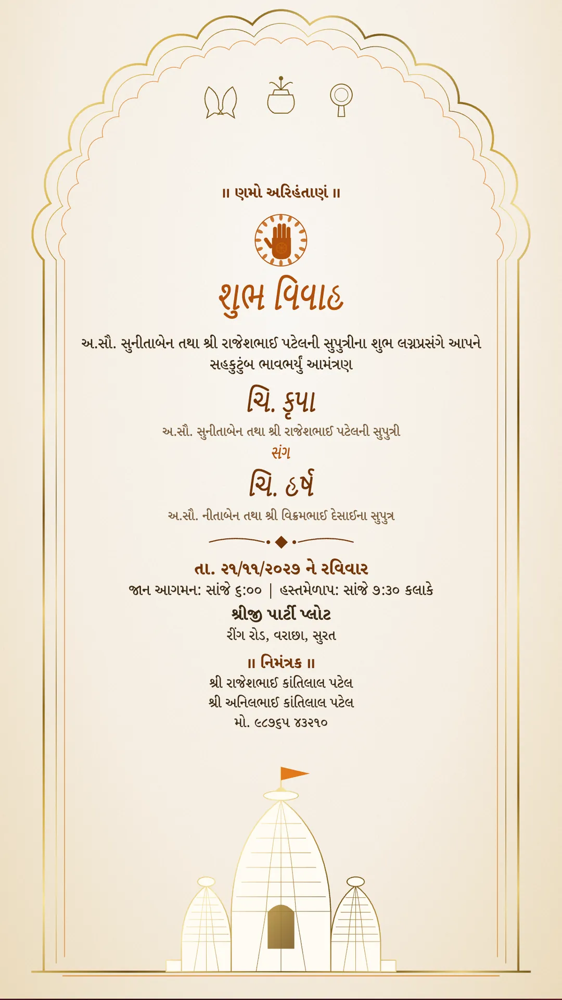
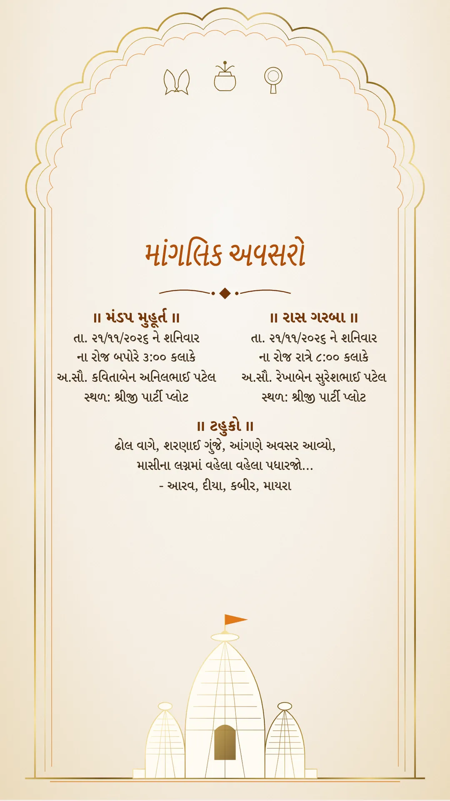
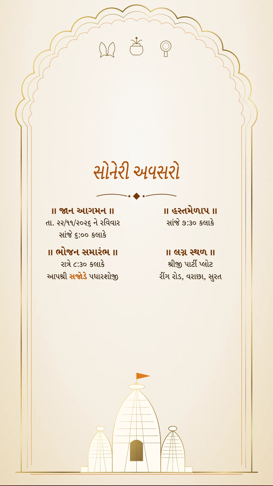
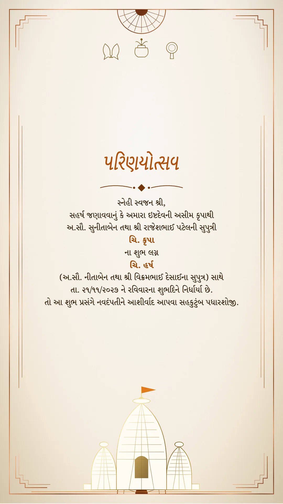
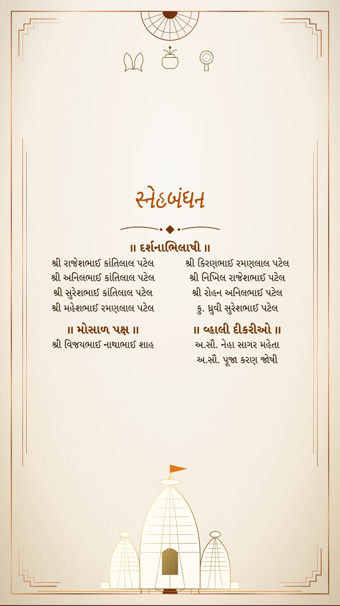
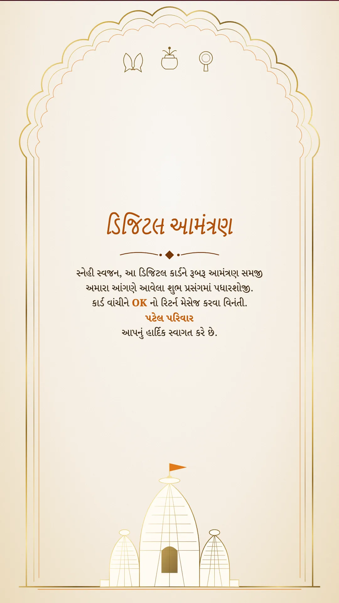

Designs › Wedding (Vivah) › Jain Lagna Patrika Saffron
Jain Lagna Patrika Saffron: Gujarati Jain wedding kankotri

- Ceremony: Wedding (Vivah)
- Language: Gujarati
- God or sacred symbol: Jain (Ahimsa hand)
- Format: WhatsApp image (1080 x 1920 px) and 5 x 7 inch print PDF
- Pages: 6 (cover, functions, wedding-day programme, letter, family names, closing message)
About this design
This is the only Jain card in the set. The background is pearl white, warming to pale saffron at the edges, and the text sits inside a cusped temple arch drawn in two gold lines and a fine saffron one, like the scalloped arches inside a derasar. Above the arch are three of the ashtamangala, the eight auspicious symbols, in gold line: a pair of fish, a full kalash and a mirror. At the bottom stands a white marble shikhar temple with a saffron flag, with a smaller shikhar on either side, on a thin saffron ground line.
The cover opens with ॥ ણમો અરિહંતાણં ॥, the first line of the Navkar Mantra, and the emblem is the Ahimsa hand, a raised palm with the dharma wheel, in saffron. The title શુભ વિવાહ is in burnt orange, the names in deep brown and the rest in a dark brown serif. There is no Ganesha shlok on this card.
The sample wording is the standard Gujarati kankotri text used on the other Gujarati cards, with Patel family names, a party plot in Surat, a jaan arrival and a hastmelap. Replace the names and the venue, and if your family describes the wedding programme differently, edit the times on the cover and the headings on the wedding-day page. The other pages follow the same kankotri order as Gulabi Kankotri: functions, programme, letter, family names and a closing message.
It suits Gujarati Jain families who want a calm, light card with Jain symbols rather than a Ganesha invocation. Families who want a Gujarati kankotri with Ganesha should look at Gulabi Kankotri or Sandhya Pink Dusk Kankotri instead.
All 6 pages
The cover is shown above. These are the other pages exactly as the card opens in the editor, with the sample family names.





Sample wording on this card
The cover opens in the editor with this text. Change any line, or switch the card to another language.
॥ ણમો અરિહંતાણં ॥
શુભ વિવાહ
અ.સૌ. સુનીતાબેન તથા શ્રી રાજેશભાઈ પટેલની સુપુત્રીના શુભ લગ્નપ્રસંગે આપને સહકુટુંબ ભાવભર્યું આમંત્રણ
ચિ. કૃપા
અ.સૌ. સુનીતાબેન તથા શ્રી રાજેશભાઈ પટેલની સુપુત્રી
સંગ
ચિ. હર્ષ
અ.સૌ. નીતાબેન તથા શ્રી વિક્રમભાઈ દેસાઈના સુપુત્ર
તા. ૨૧/૧૧/૨૦૨૭ ને રવિવાર
જાન આગમન: સાંજે ૬:૦૦ | હસ્તમેળાપ: સાંજે ૭:૩૦ કલાકે
શ્રીજી પાર્ટી પ્લોટ
રીંગ રોડ, વરાછા, સુરત
નિમંત્રક
શ્રી રાજેશભાઈ કાંતિલાલ પટેલ
શ્રી અનિલભાઈ કાંતિલાલ પટેલ
મો. ૯૮૭૬૫ ૪૩૨૧૦
The other five pages are માંગલિક અવસરો (the functions before the wedding), સોનેરી અવસરો (the wedding-day programme), પરિણયોત્સવ (the letter), સ્નેહબંધન (the family names) and ડિજિટલ આમંત્રણ (the closing message).